易车网车型数据可视化分析
Python 爬虫 · Pandas 清洗 · Matplotlib 可视化
5322 条原始记录 → 2651 缺失值处理 → 2651 异常值处理 → 2436 条清洁数据 → 10 张多维分析图
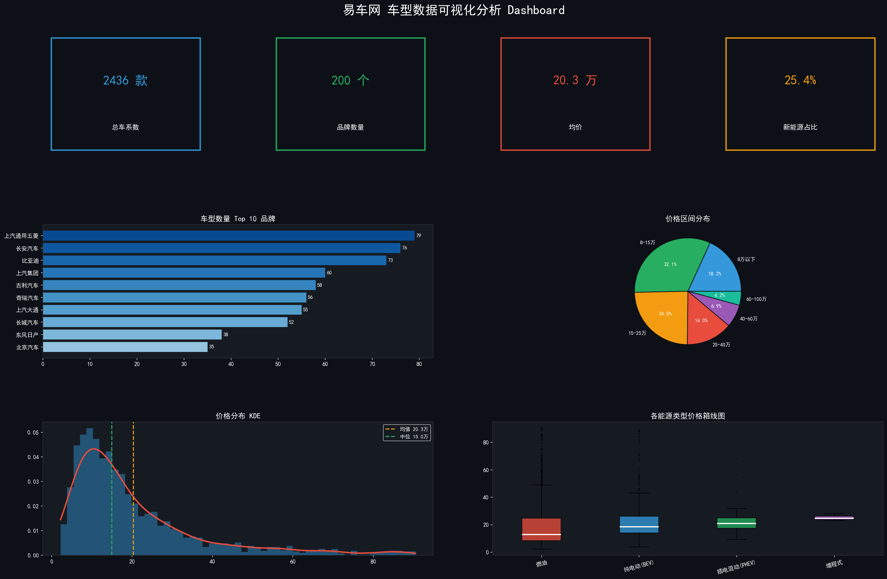
总览 Dashboard：5322 条原始记录 → 2436 条清洁数据 → 10 张图
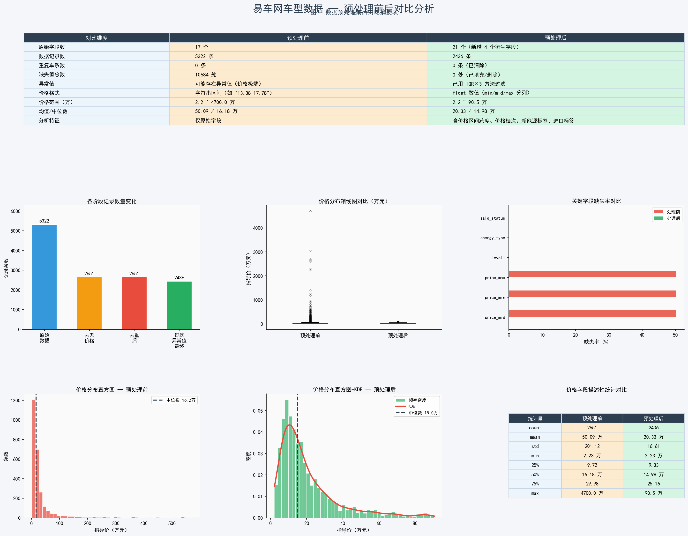
缺失值 / 异常值 / 重复值 三步预处理前后对比
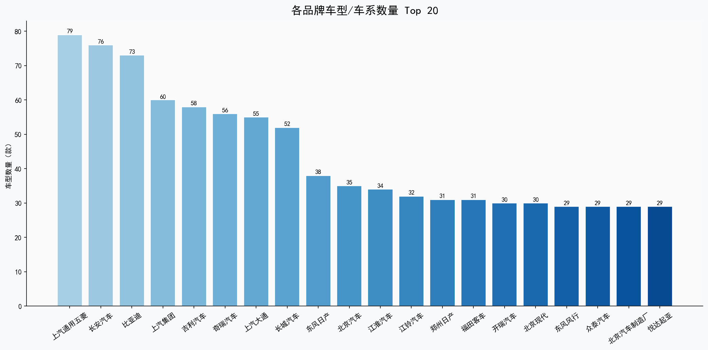
车型数量 Top 10 品牌
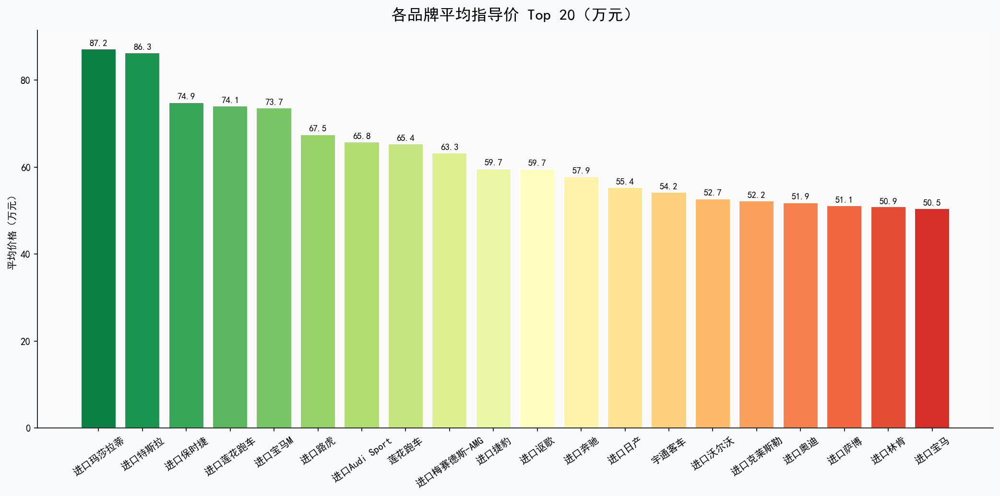
品牌平均价格对比
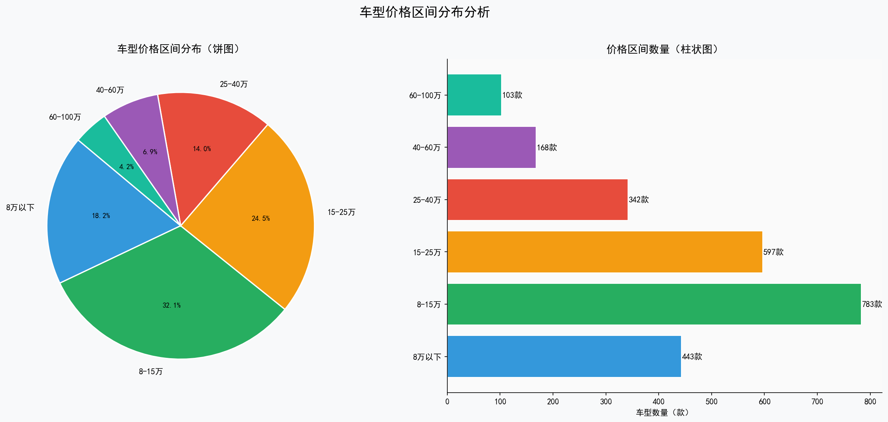
价格区间分布
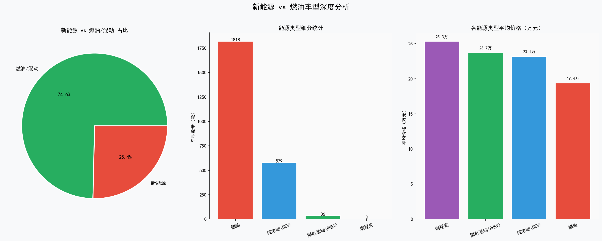
能源类型占比
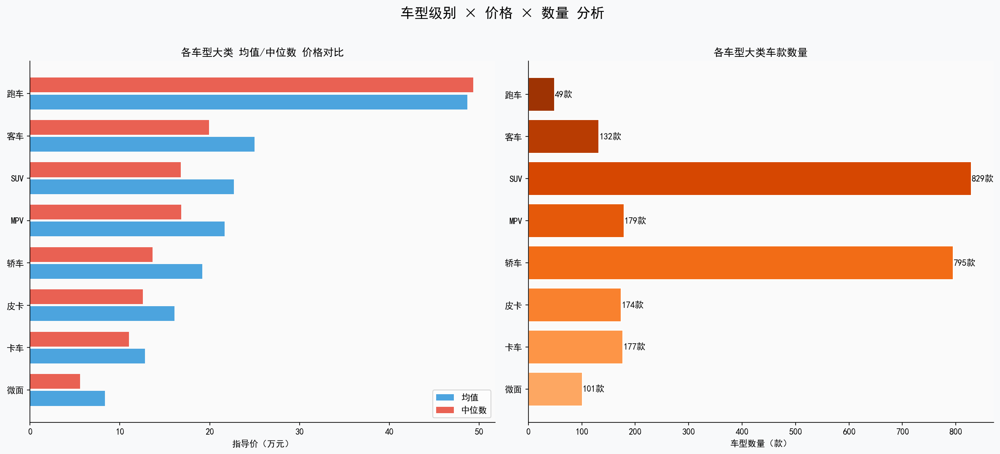
车型级别与价格
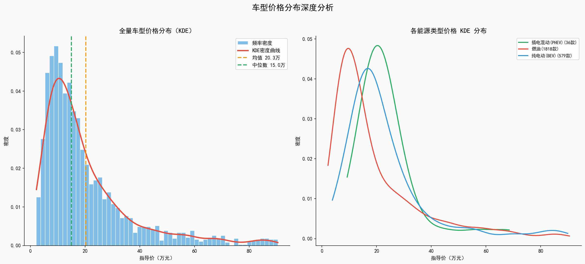
价格分布核密度估计
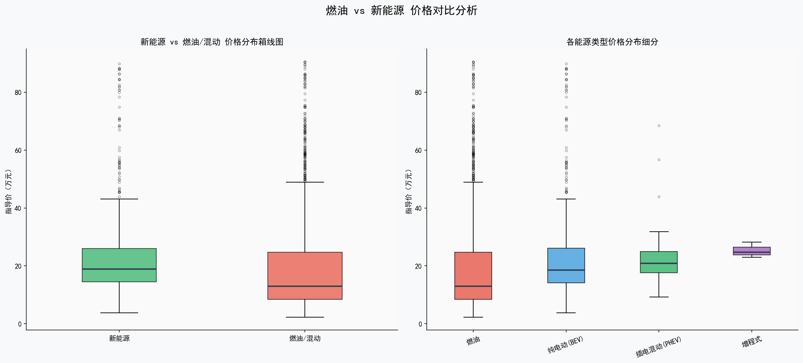
各能源类型价格箱线图
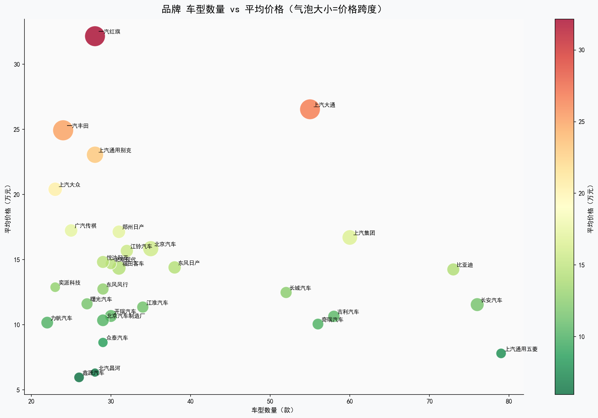
品牌数量 - 均价气泡图
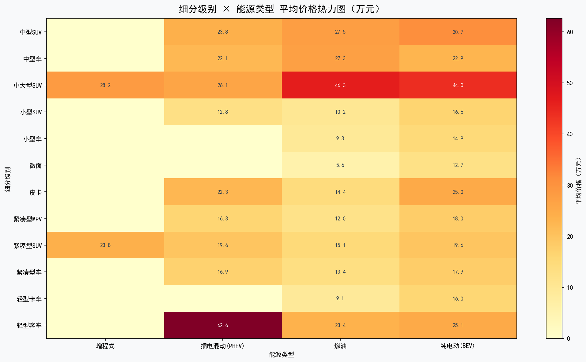
级别 × 能源 交叉热力图
⭐ 查看源码仓库